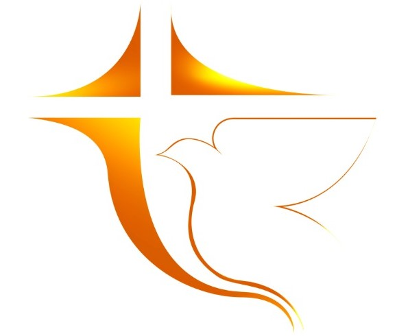

Comunidad Cristiana Laguna Larga
Inicio
Estudios Bíblicos
Reuniones
La Biblia en un Año
Escuela Bíblica
Estudios bíblicos 2021
Dioses que fallan
Inicio: 04/02/2021
Fin: 04/02/2021
Recursos:
Coalición Lee - Sesión 1
Dioses que fallan (Libro en pdf)
Preguntas
Salmo 23
Inicio: 11/02/2021
Fin: 25/03/2021
Recursos:
Salmo 23 - Nando Goicochea (necesario)
Salmo 23 - Matt Chandler (opcional)
Preguntas para el estudio 1
Preguntas para el estudio 2
Preguntas para el estudio 3
Preguntas para el estudio 4
Preguntas para el estudio 5
Preguntas para el estudio 6
Conquistando la Depresión y el Enojo
Inicio: 01/04/2021
Fin: 27/05/2021
Recursos:
Conquistando la Depresión y el Enojo
, Instituto Bíblico BBN.
Preguntas para el estudio 1
Conflictos
Inicio: 03/06/2021
Fin: 24/06/2021
Recursos:
Conflictos - Doug Fields